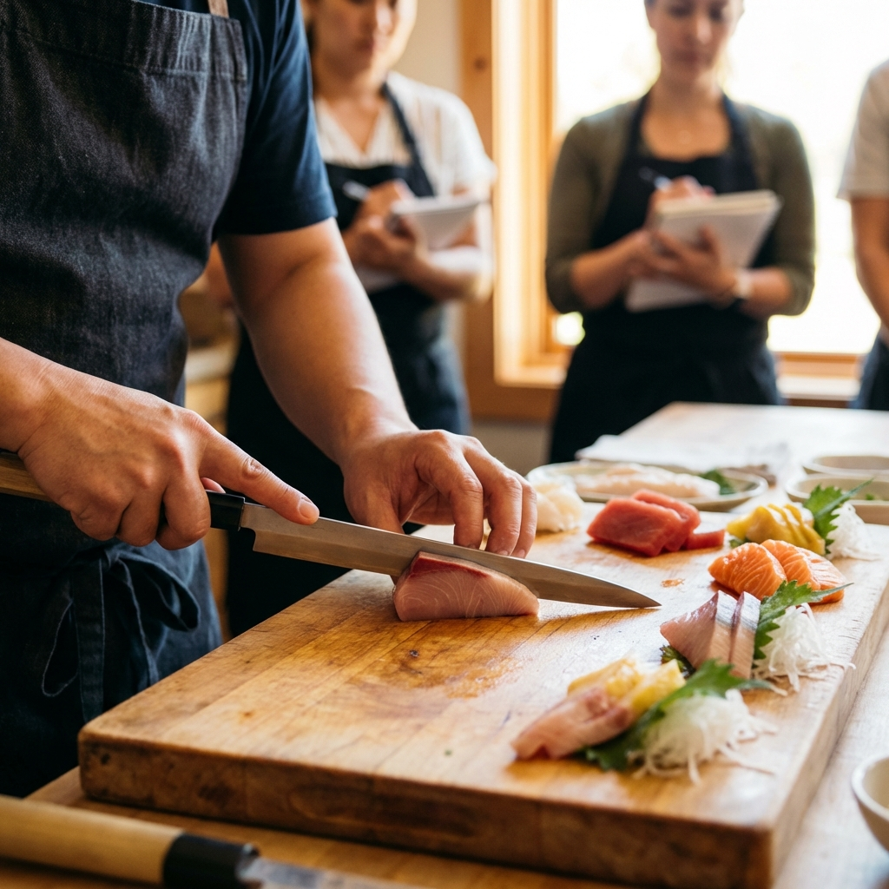

To Our Luxembourg Readers
Sushi in authentic Ginza establishments differs greatly from what one might find in casual dining across Europe. It is a silent, almost sacred performance where the chef (Itamae) dictates the pace. For the Luxembourgish gourmet who values tradition and precision, this guide unveils the deeper philosophy behind the 'Omakase' price tag.
The Silence of the Master: The Ultimate Edomae Experience
In the narrow alleys of Ginza, tradition is not just kept; it is forged daily. "Edomae" is not merely a style of cooking; it is a time capsule of Tokyo's history.

1. The Origins of 'Edomae': Fast Food of the Samurai
To understand high-end sushi, one must look back 200 years to the Edo period (1603-1867). Before refrigeration, raw fish was a health risk. 'Edomae' literally means 'In front of Edo (Tokyo Bay)', referring to the fresh catch available locally. However, preserving this fish required genius innovation.
Chefs developed techniques like 'Zuke' (marinating tuna in soy sauce), 'Shime' (curing mackerel in vinegar), and 'Ni-hama' (boiling clams in sweet broth). These methods were originally sanitary necessities. Today, they are celebrated as flavor enhancers. The vinegar in the rice (Shari) was also strictly a preservative. Modern Edomae sushi is, therefore, a culinary fossil—a sophisticated preservation of ancient survival techniques.
🇯🇵 Keyword: Omotenashi (おもてなし)
Often translated as 'hospitality', Omotenashi goes deeper. It means anticipating a guest's needs before they even realize them. In a sushi bar, watch the chef. If you are left-handed, he might place the sushi slightly angled to your left. If you are drinking sake rapidly, he might slow down the serving pace. It is an unspoken dance of observation.
2. The Counter-Intuitive Truth: Freshness is Not Everything
Most Europeans believe the freshest fish is the best. In Edomae sushi, this is a myth. While fish must be caught freshly, serving it immediately often results in a tough, chewy texture and little flavor. The true master utilizes 'Jukusei' (Aging).
By carefully aging fish like Tuna or Grouper for days or even weeks in controlled environments, enzymes break down proteins into amino acids (Umami). A 10-day aged Otoro (fatty tuna) melts on the tongue not just because of fat, but because the connective tissue has relaxed. This process requires surgical precision; one mistake leads to spoilage. Only a chef with decades of experience dares to push the limits of aging.
3. Shari: The Heart of the Matter
It is often said that sushi is '60% rice, 40% fish'. The Shari (sushi rice) is the chef's signature. In high-end Ginza establishments, you will notice the rice is often tinted red. This is 'Akazu' (Red Vinegar), made from fermented sake lees.
Unlike the sharp, white vinegar used in cheaper sushi, Akazu has a mellow, rich umami and a distinct aroma that pairs perfectly with strong-flavored toppings like Tuna and Eel. The temperature of the rice is also manipulated; warmer rice for fatty fish to help the fat melt, and cooler rice for delicate shellfish. This thermal contrast is the final secret of the itinerary.
📍 Access / Location Context
Ginza 4-chome, Chuo-ku, Tokyo, Japan / *Representative Area for High-End Sushi
Content Source based on: Ginza Sushi Association Press Release
This article is a curated introduction for KAKEHASHI readers. All rights belong to the
original owners.